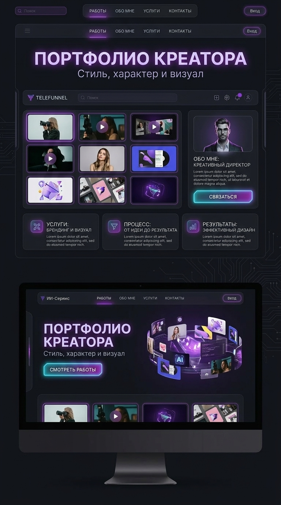
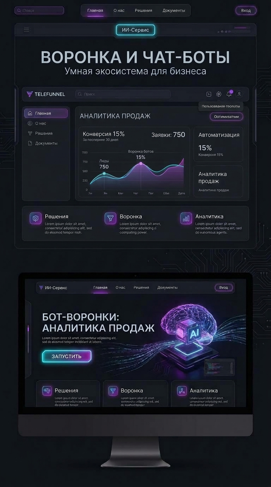

01
Лендинги
Сайты, которые не просто «есть», а собирают внимание, держат ритм и ведут человека по смыслу.
Vibe Coder / Portfolio / Web & AI Experiences
Не просто «что-то сверстать», а собрать ощущение, стиль, логику и подачу так, чтобы проект хотелось открыть, листать и запомнить.
01 — Обо мне
Я работаю на стыке кода, визуала, UX и AI-инструментов. Для меня сайт — это не набор блоков. Это ощущение от проекта, ритм, подача, структура и то, как человек чувствует себя внутри интерфейса.
Мой подход — сделать быстро, красиво и не бездумно. Чтобы проект не выглядел как очередной шаблон, собранный без вкуса и идеи.
Я делаю:
02 — Навыки
01
Сайты, которые не просто «есть», а собирают внимание, держат ритм и ведут человека по смыслу.
02
Страницы, которые показывают не только работы, но и стиль, характер и уровень.
03
Когда нужен не просто сайт, а ощущение: атмосфера, характер, настроение, подача.
04
Использую нейросети как инструмент ускорения и усиления идей, а не как замену мышлению.
05
Продумываю, как человек читает, куда смотрит, где теряется и где принимает решение.
06
Могу собрать сильную первую версию быстро, без месяцев бесконечных согласований.
03 — Подход
01
Я смотрю не только на задачу, но и на ощущение, которое должен передавать проект.
02
Красивый сайт без логики — это просто красивая обёртка. Поэтому я собираю смысл, сценарий и путь пользователя.
03
Когда есть стиль и логика, проект собирается быстрее, точнее и выглядит сильно.
04 — Кейсы

02 / Personal brand
Личный сайт-портфолио, который показывает не только кейсы, но и стиль человека.

03 / Promo / Funnel
Промо-страница под воронку и digital-продукт с акцентом на конверсию и лёгкость восприятия.
01 / Landing / Atmosphere
Лендинг для digital-продукта с акцентом на атмосферу, скорость восприятия и современный визуал.
04 / Concept / AI
Сайт с упором на трендовую подачу, сильный первый экран и ощущение «это хочется переслать».
05 — Блог / Отзывы
Заметка 01 / Портфолио
Сайт наконец выглядит как я, а не как шаблон из Pinterest. Работы читаются, характер есть, и люди сами пишут после первого экрана.
креативный директор
март 2026
Заметка 02 / Воронка
Страница перестала объяснять продукт абзацами. Стало ясно, куда нажать и зачем. Конверсия выросла уже на первой неделе.
основатель AI-сервиса
февраль 2026
Заметка 03 / Атмосфера
Собрали вайб быстрее, чем обычно собирают бриф. Выглядит дорого, читается легко, ничего лишнего.
продюсер digital-проекта
январь 2026
Заметка 04 / Процесс
Нравится, что это не «вот вам макет, дальше сами». Есть вкус, структура и скорость. Проект ощущается цельным — от первого экрана до кнопки.
студия, партнёрский запуск
декабрь 2025
06 — Почему я
Потому что я умею видеть проект целиком. Не только как это собрать — но и как это подать, как это будет восприниматься, где человек зацепится взглядом, что запомнит и почему это будет выглядеть дороже, чем стоит.
Я соединяю: эстетику + структуру + digital-мышление + скорость
07 — Стек
Но если честно — главный инструмент не стек, а вкус, насмотренность и умение собирать цельное впечатление.
08 — Для кого
MANIFESTO
Хороший сайт — это не когда «нормально сверстано». Это когда у проекта появляется энергия, форма и ощущение, что он живой.
09 — Дальше
Могу помочь с концепцией, структурой, упаковкой и реализацией. От первого вайба до готовой страницы.